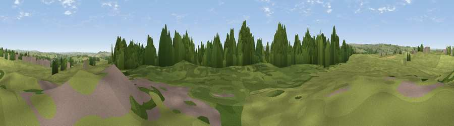

Viewpoint near Cockfield
#32835 in England · top 84% of its area beats it · near CockfieldWhere it is
The exact computed spot (NZ 11975 23425). Click the marker for map links.
The view, rendered

A 360° render of this exact spot computed from the terrain model, tree cover and land cover — summer colours, afternoon light, calibrated against photographs of famous viewpoints. Real trees, hedges and buildings will differ in detail.
The panorama
Grey silhouette: terrain skyline in each direction (720 bearings, Earth curvature and refraction included). Dashed green: skyline with trees (+15 m) and buildings (+8 m) as obstacles. Blue strip: how far the ground is visible on each bearing.
Where the view opens
Wedge length = distance to the farthest visible ground on that bearing (vegetation-aware). Rings at 10, 25 and 50 km.
What fills the view
69% grassland · 19% woodland · 10% cropland · 2% built-up
Angular shares of the visible panorama (visual magnitude), not map area. Landscape diversity 0.39 (0–1 Shannon).
Key numbers
More beautiful places nearby
The staircase of upgrades: each row has a higher view potential than everything closer. Driving times are estimates from straight-line distance, calibrated against real road routing — check an actual route before setting out.
| Place | Direction | Drive | Score |
|---|---|---|---|
| Viewpoint near Cockfield | ESE · 1 km | ~2 min | 42.7 |
| Viewpoint near Cockfield | WSW · 2 km | ~5 min | 43.5 |
| Viewpoint near Copley | WNW · 3 km | ~8 min | 60.2 |
| Viewpoint near Whorlton | S · 7 km | ~14 min | 64.1 |
| Viewpoint near St Helen Auckland | ENE · 8 km | ~17 min | 70.3 |
| Viewpoint near Eggleston | W · 10 km | ~20 min | 76.0 |
| Pontop Pike | N · 30 km | ~47 min | 77.8 |
| Viewpoint near Ingleby Cross | SE · 41 km | ~61 min | 82.4 |
54.60585, -1.81613 · source: screening · position refined by local search. Computed location — check access rights before visiting.